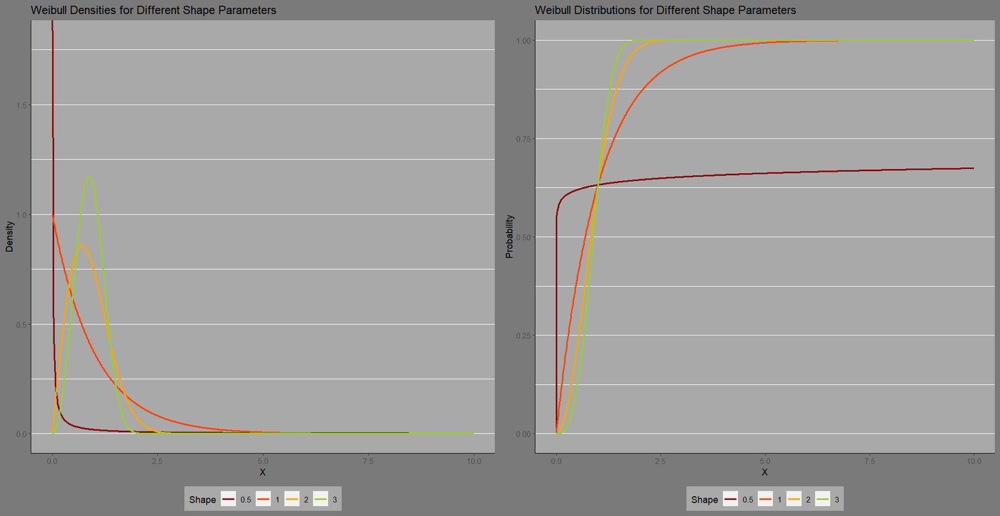

Warranty Cost Analysis
Statistical analysis and predictive modeling of warranty claims for a major global automotive parts manufacturer.

This writeup covers a project for a major, global commercial vehicle manufacturer analyzing parts failures and warranty claims. The firm wanted to analyze its warranty claim data to identify current failure patterns, predict future failure patterns, and support corrective business policies. The project involved substantial elements of data collection, data cleaning and preparation, exploratory data analysis, data visualization, and predictive modeling.
The end results included:
- clarity on the sources and nature of data that the firm had available as well as an understanding of what further data are necessary for future business analytics development
- versatile data visualization tools, including an interactive dashboard, for understanding warranty claim patterns and
- predictive modeling frameworks for understanding and forecasting key metrics such as raw batch failure rates and cumulative failure percentages.
Here the aim is to distill major takeaways from two important steps in this project: data collection/preparation and predictive modeling of cumulative failures.
Data Collection & Preparation
In many data science projects, data collection and preparation are the most time-consuming steps. This project was no exception. Among the challenges encountered during this phase:
- data fragmentation: different parts of the data were housed in different company divisions and/or clients
- data formatting inconsistency: inconsistent formatting of data fields in data from different sources
- data value inconsistency: data values in some data sets were inconsistent with purported values in other data sets
- data incongruency: certain aspects of the data were incongruent with stated business practices (e.g. service times far in excess of warranty period time), raising questions of error or exceptions
- missing data: some data values were missing in a given data set; some values were present in one data but absent from another (where they should also appear)
- unstandardized data: some data fields were not standardized, resulting in multiple spellings/representations of the same values
While these issues can be worked through and resolved, this typically uses a fair amount of labor. The process requires a constant back and forth between the business leaders with direct domain insight and the analysts and data scientists working the data. Some foresight, planning, and data engineering can make the data collection and preparation steps far less time-consuming. Among suggestions were:
- standardization: standardization of data (standard values, spellings, etc.), standardization of data storage formatting
- automation: automated data entry to reduce errors, misspellings, missing values
- integrated information systems: integrating information systems across different departments and even with clients to unify data sources
- problem definition: define the problem at hand in clear and direct terms
Proper implementation of these principles during data entry and storage greatly improves the ease and efficiency of data collection and the reduces the steps and resources necessary for data prep. The fourth suggestion is a critical principle that is key to the success of any analytics project. Good problem definition makes it clear what data is needed and what modeling frameworks might be worth exploring. Data projects are only valuable insofar as they are in line with an organization’s objectives.
Although many suggestions for improvements to future data collection projects were made, the firm was already aware of some of these shortcomings. They had already begun implementing more automated data collection and more stringent standardization while actively working toward more data integration across the firm and with clients. This project reinforced the firm’s needs and elucidated where savings in resources spent on data prep were to be found.
Weibull Modeling of Component Failures
The Weibull distribution is an extreme value distribution and a classical model for predicting hardware failure patterns. There are several parameters that control the model output. Different parameter combinations can yield an increasing, constant, or decreasing rate of failure. Each scenario corresponds to a different failure pattern. When there are inherent manufacturing defects, there is an initial spike in product failures that tapers off.
When failures are due to increasing stress and wear on the component, failure rates tend to increase with time. If wear and tear is constant, then the failure rate will tend to hold constant over the examined life of the hardware component. The Weibull model allows us to address these possible scenarios by setting the model parameters. Below is a graph showing the densities and distributions of several parametrizations of the Weibull model:

For this project, the Weibull generally performed well in modeling cumulative failure patterns across different combinations of product family and client. There were a few combinations of customer and product family where the Weibull performed less accurately. A closer look at these combinations revealed the failure data was more volatile than the other cases, and there were several change points in the failure patterns of these combinations. In particular, for these cases, the pandemic shutdown era appeared to have a more profound impact on the failure patterns than for other cases. To address these cases a more complex modeling framework and/or separation of data across change points (and possibly covariates) is required. The client is actively working on gathering more in-depth data for an extension to this project for more advanced failure modeling. The ultimate goal is to be able to incorporate driver and vehicle sensor data in real-time to provide increasingly accurate failure predictions eventually leading to revamped warranty policies, improved product engineering, and predictive maintenance capabilities.